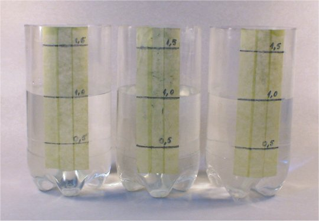

Numim sistem partea de univers care ne interesează. Restul universului
îl numim mediu.
Numim sistem partea de univers care ne interesează. Restul universului
îl numim mediu.
Elemente de termodinamică. |
Noţiuni termodinamice de bază |
Nu putem fi atenţi la tot ce se întâmplă, astfel că, de fiecare dată, suntem nevoiţi să ne concentrăm atenţia doar asupra părţii din univers care ne interesează.
Numim sistem partea de univers care ne interesează. Restul universului
îl numim mediu.
 Provocarea 2-1
Provocarea 2-1
În timpul unei partide de tenis de câmp, te−ar interesa oară că un necunoscut de pe alt continent tocmai scapă din mână un mănunchi de chei?
Imaginează−ţi că joci tenis de câmp şi mingea tocmai se îndreaptă spre tine. Pentru tine, mingea devine subiectul de maxim interes. Vei încerca să apreciezi cât de repede se mişcă şi încotro pentru ca să o poţi lovi. Pentru moment, mingea este sistemul care îţi captează atenţia.
Analiza mişcării corpurilor este subiectul preferat în mecanică. Sistemele mecanice pot fi descrise complet măsurând doar distanţe, durate şi mase. Orice altceva poate fi obţinut: vitezele sunt calculate împărţind distanţele parcurse la durate, impulsurile înmulţind masele cu vitezele, şi aşa mai departe.
Totuşi, o analiză pur mecanică a situaţiei din figura 2-1 ar putea fi incompletă.

Figura 2-1. Trei borcane conţin aceeaşi cantitate de apă. Caracteristicile celor trei
sisteme sunt oare identice?
Din punctul de vedere al mecanicii, sistemele reprezentate de cele trei borcane au caracteristici identice: conţin aceeaşi cantitate de apă, sunt în repaus faţă de observator (energie cinetică nulă faţă de acesta), aceeaşi energie potenţială de interacţiune gravitaţională cu Pământul (se află pe o suprafaţă orizontală) etc.
Cu toate acestea, cufundând câte un termometru în apa din cele trei borcane, termometrele ar putea indica diferenţe! Nu numai că sistemele ar putea fi diferite, dincolo de ceea ce o analiză mecanică ar putea sesiza, dar pot chiar evolua diferit. Apa rece s−ar putea încălzi treptat, în timp ce apa fierbinte s−ar răci până când, în sfârşit, indicaţiile termometrelor vor fi identice.
Suntem astfel nevoiţi să extindem clasa sistemelor care ne interesează, luând în considerare şi caracteristici cum sunt indicaţiile termometrelor, precum şi procese termice (cum sunt încălzirea şi răcirea).
Numim sistem termodinamic un sistem pentru care interacţiunile
termice nu sunt neglijabile.
Sistemele termodinamice sunt mai generale decât cele mecanice, luând în considerare şi interacţiunile termice - complet ignorate în sistemele mecanice.